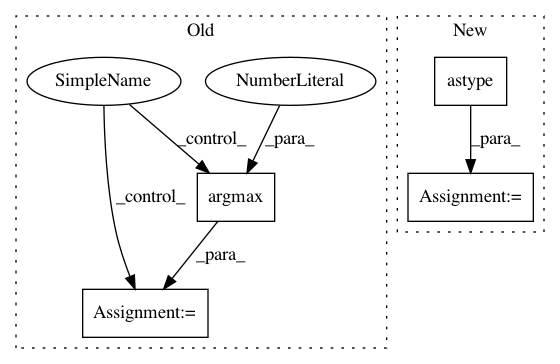

8442ee853b9cb7813689d9dfb381af0976bc5825,pyglmnet/pyglmnet.py,GLM,predict,#GLM#Any#,679
Before Change
if isinstance(self.fit_, dict):
yhat = yhat.argmax(axis=1)
else:
yhat = yhat.argmax(axis=2)
return yhat
def predict_proba(self, X):
After Change
yhat = _lmb(self.distr, self.fit_["beta0"],
self.fit_["beta"], X, self.eta)
if self.distr == "binomial":
yhat = (yhat > 0.5).astype(int)
yhat = np.asarray(yhat)
return yhat
def predict_proba(self, X):
In pattern: SUPERPATTERN
Frequency: 3
Non-data size: 4
Instances
Project Name: glm-tools/pyglmnet
Commit Name: 8442ee853b9cb7813689d9dfb381af0976bc5825
Time: 2017-03-28
Author: pavan.ramkumar@gmail.com
File Name: pyglmnet/pyglmnet.py
Class Name: GLM
Method Name: predict
Project Name: pytorch/tnt
Commit Name: ba256835a4f33d9139a70b6440c3223123132bc8
Time: 2017-08-24
Author: swetha.tanamala@gmail.com
File Name: torchnet/meter/confusionmeter.py
Class Name: ConfusionMeter
Method Name: add
Project Name: d2l-ai/d2l-zh
Commit Name: 33e80de90362b279744675a48caf9be1110669ab
Time: 2018-04-04
Author: asv325@gmail.com
File Name: utils.py
Class Name:
Method Name: evaluate_accuracy